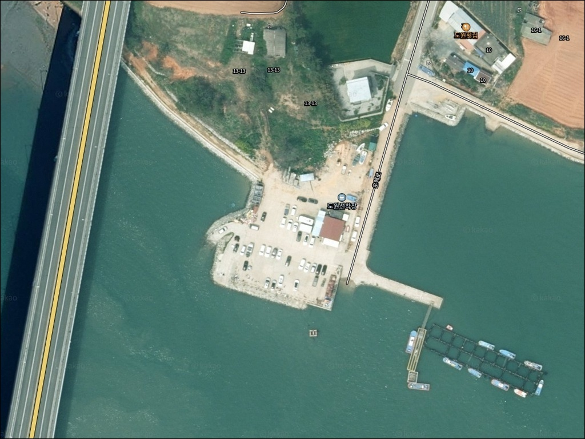
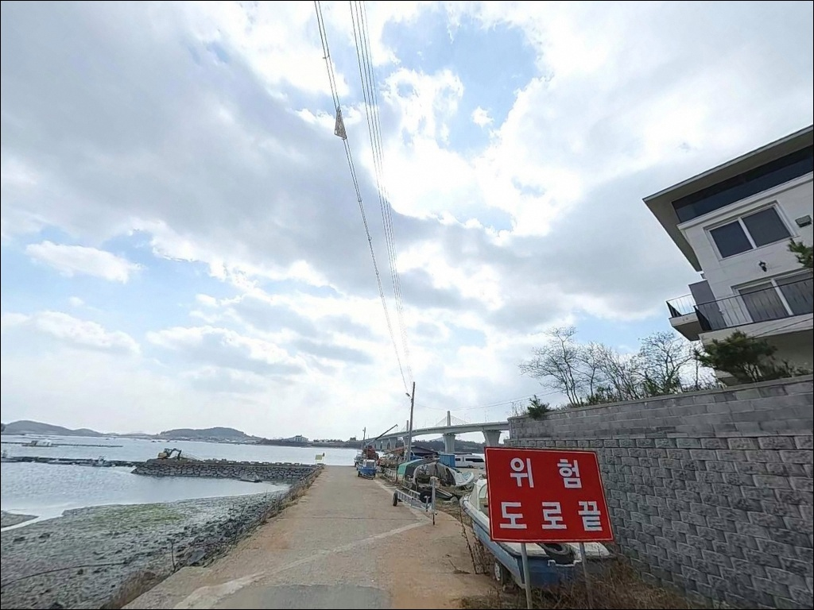
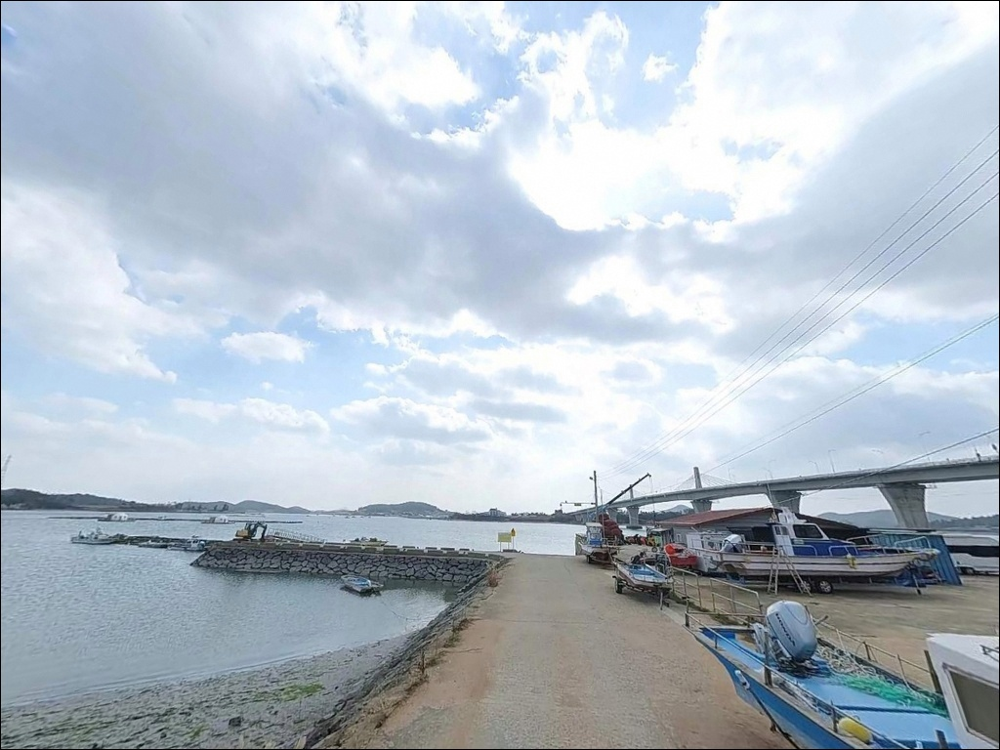
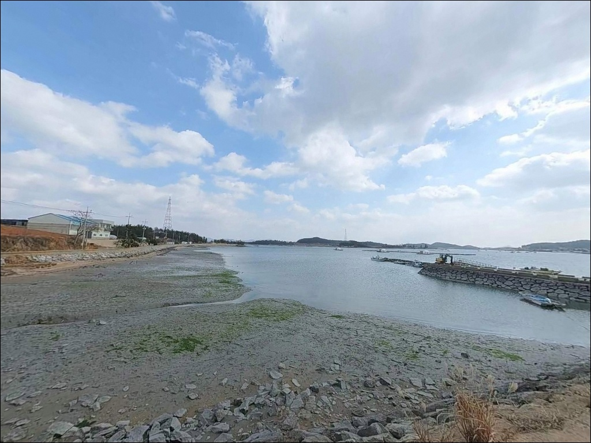
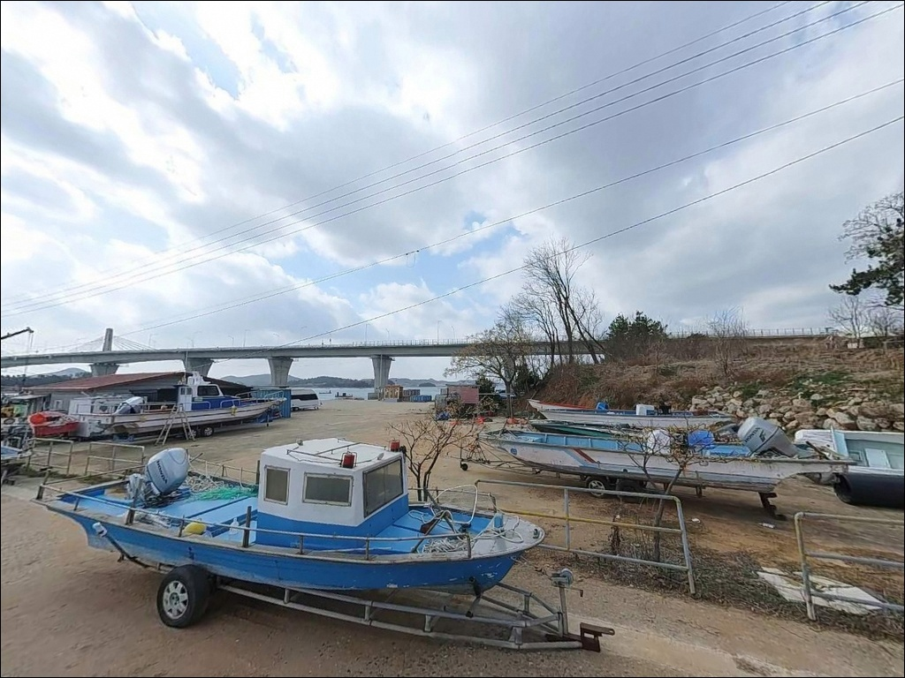
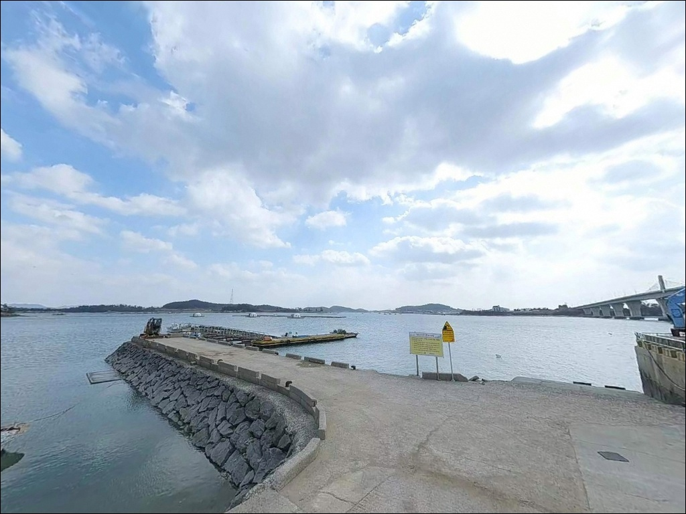
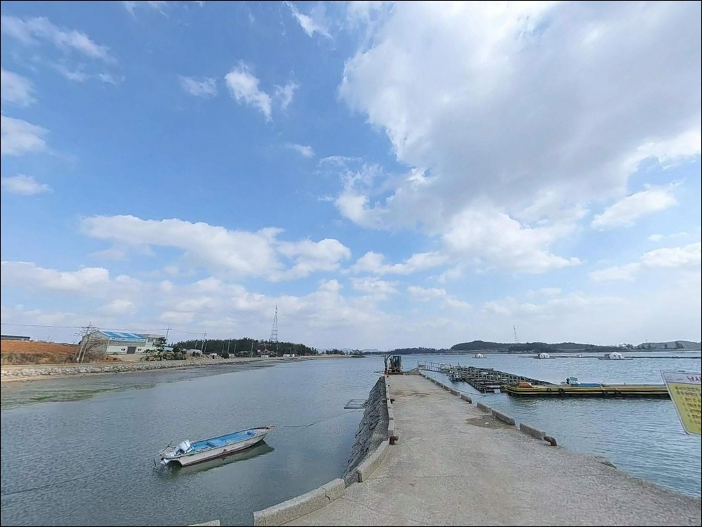
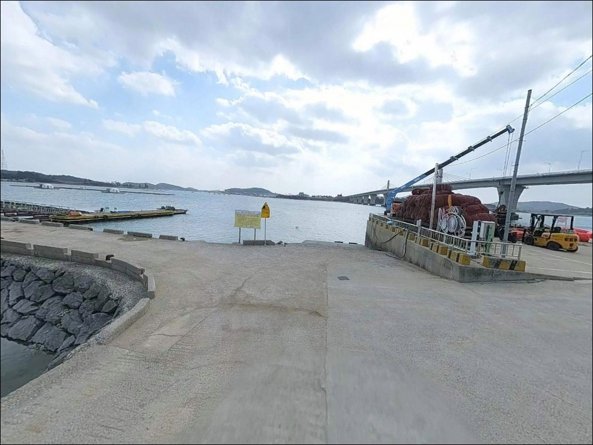
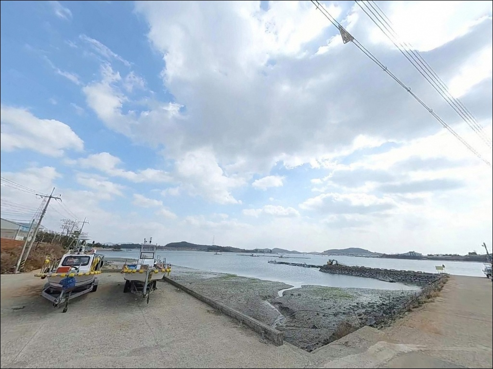

도원선착장, 전남 무안군 고요한 수면을 바라보며 차박, 낚시를 즐기기 좋은 해안
이 페이지에는 광고(제휴 링크 포함)가 있으며, 광고 링크를 통해 구매하면 운영자가 판매 수익 또는 수수료를 받을 수 있습니다. 포인트 사진: 카카오맵 스카이뷰·로드뷰. 이 페이지의 지도·사진 이미지는 카카오맵의 실제 서비스 이미지와 다를 수 있습니다.


포인트 안내
도원선착장
전남 무안군 운남면 성내리 328-5
물때 계산 없이 무안 내만형 선착장을 찾으면
간조 때 드러나는 갯벌 앞에서
낚시를 시작조차 못하는 상황이 됩니다.
이 글은 도원선착장의 지형 구조와 진입 환경,
물때 판단 기준, 낚시 스타일별 적합 조건을
정리한 것입니다.
조황 단정이나 특정 어종 보장은
이 글의 범위에 포함되지 않습니다.
전남 무안군 운남면 성내리,
김대중대교 바로 아래 자리한 도원선착장은
내만 수면이 잔잔한 소형 선착장입니다.
해상 좌대낚시 시설이 운영되고,
방파제 도보낚시와 병행이 가능한 구조로
넓은 주차 공간 덕분에 낚시 후
차박으로 이어가는 방문객도 있는 곳입니다.

1. 김대중대교 아래, 도원선착장 진입 동선 분석
도원선착장은 포장도로를 따라 진입하는 구조로
급경사나 비포장 구간 없이 접근이 가능합니다.
마을 내부 도로를 통과하는 막판 구간은
폭이 좁아지는 구간이 섞일 수 있어
대형 SUV나 캠핑카라면
출발 전 위성지도로 진입로를 한 번 확인하는 것이
기본 준비입니다.
선착장 앞으로는 넓은 공터가 형성되어 있어
회차 공간 확보에 큰 어려움은 없습니다.
승용차와 중형 SUV 기준으로
무난하게 이용할 수 있는 수준이며,
어민들의 작업 공간과 어선 계류 구역을
침범하지 않는 자리를 먼저 확인하는 것이 순서입니다.
도원선착장은 진입 난이도가 낮고
주차 공간이 넓어,
처음 방문하는 낚시꾼도 자리 잡기 어렵지 않은
구조입니다.

2. 선착장 주변 차박 환경과 야간 체류 여건
선착장 앞 공터는 주차 공간이 여유로운 편이라
낚시를 마치고 차박으로 이어가는 선택이 가능합니다.
운남면 성내리 일대는 민가 밀집도가 높지 않아
야간 소음과 차량 통행이 적은
조용한 환경이 유지되는 편입니다.
김대중대교 야경이 이 포인트의 대표 이미지로
소개될 만큼 다리 주변에
야간 경관 조명이 갖춰진 곳입니다.
다만 방파제 끝단이나 수면 가까운 구간까지
충분히 밝다고 단정하기 어려우므로
야간 낚시와 차박 모두
개인 헤드랜턴은 반드시 챙겨야 합니다.
내만 구조라 파도 영향이 크지 않은 편이어서
야간 체류 시 파도 소음보다는
바람 방향이 변수가 됩니다.
차박을 계획한다면 어선 계류 동선을 방해하지 않는
공터 구간에 자리를 잡는 것이 매너입니다.


3. 주변 편의시설과 인프라 현황
도원선착장은 화장실과 주차 시설이 갖춰진
공식 관광지로 등록된 포인트입니다.
연중무휴 상시 개방 운영으로 안내되어 있어
시간 제약 없이 방문이 가능합니다.
반경 3km 이내 편의점이나 마트의
구체적인 운영 정보는 현장에서 따로 확인해야 합니다.
식수, 얼음, 낚시 소품은
출발 전에 갖추는 것이 안전합니다.
운남면 소재지 방향으로 이동하면
일부 생활 인프라를 이용할 수 있으며,
응급 상황에 대비해 목포 시내 의료 기관 위치를
사전에 확인해 두는 편이 좋습니다.

4. 출조 전 반드시 챙겨야 할 준비사항
이 포인트 방문에서 가장 먼저 확인해야 할 것은
물때입니다.
무안 운남면 일대 서해안은
조수간만의 차가 매우 큰 지역으로
간조에는 갯벌이 상당 부분 드러납니다.
서해 내만형 선착장에서는
만조 전후 2시간이 낚시 가능 여건을 결정합니다.
바다타임에서 운남면 기준 물때를 확인하고
들물 시작 시각에 맞춰 출발 시각을 정하는 것이
기본 전략입니다.
서해안 갯뻘 구간에서 채비 손실이 생길 수 있으니
여분 채비는 넉넉하게 준비하는 편이 좋습니다.
기상 예보는 당일 아침 한 번 더 확인하고,
야간 낚시를 계획한다면
헤드랜턴과 구명조끼는 필수입니다.
선착장 발판은 이끼가 낄 수 있어
미끄럼 사고에 주의해야 합니다.
어선이 실제로 이용하는 소형 선착장이라
낚시 전 어선 계류 위치와 이동 동선을
먼저 파악하는 것이 기본 매너입니다.
최신 조황은 가기 전에 꼭 검색해 보시기 바랍니다.

5. 내만형 지형이 만드는 낚시 여건 분석
도원선착장은 내만 안쪽에 자리한 선착장으로
외해의 파도가 직접 들어오지 않는 구조입니다.
선착장 수면은 잔잔한 편이며,
선착장 끝단과 접안 구간 쪽으로
상대적으로 수심이 형성되는 구간이 있습니다.
해상 좌대낚시 시설이 운영되는 것으로 확인되는 만큼
선착장 앞 일정 수심 구간이 확보된 포인트입니다.
바닥 지형은 서해 내만형 특성상
뻘과 모래가 혼합된 저질로 형성되어 있습니다.
조류는 만 안쪽 구조라 강하지 않은 편이지만,
들물·날물 흐름에 따라 선착장 앞 수면 상태가
달라지는 전형적인 서해형 리듬을 보입니다.
김대중대교 교각 주변으로는
조류 변화가 생기는 구간이 형성됩니다.


6. 도원선착장에 어울리는 낚시 스타일
이 포인트에서 가장 기본이 되는 스타일은
원투낚시입니다.
내만 뻘 지형을 바탕으로 하는 서해안 선착장 구조에서
봉돌을 충분히 무겁게 달아 멀리 던지는 방식이
지형 조건과 잘 맞습니다.
감성돔·숭어·붕장어 등
서해 내만형 어종 구성을
기대해 볼 수 있습니다.
찌낚시는 만조 전후 잔잔한 수면 상태에서
시도해볼 수 있는 방식입니다.
선착장 발판 주변 중층을 탐색하는 방식으로
조류가 느려지는 타이밍을 노리는 구성이 맞습니다.
김대중대교 교각 인근은
조류 변화가 형성되는 구간으로
농어나 숭어를 노리는
라이트 루어낚시를 시도해 볼 수 있는 지점입니다.
다리 교각 주변을 지그헤드로 천천히 탐색하는 방식이
이 구간의 지형 특성에 어울립니다.
해상 좌대가 운영되는 포인트라
가족 단위나 처음 바다낚시를 시도하는 분이라면
좌대낚시를 병행하는 선택도 가능합니다.
출조 전 좌대 운영 일정을 미리 확인해 두는 편이 좋습니다.

7. 대안 포인트와 플랜 B 동선
도원선착장에서 물때가 맞지 않거나
자리 여건이 여의치 않을 때
가장 먼저 고려할 수 있는 대안은
무안 구로항 방파제(청계면 구로리)입니다.
봄철 감성돔 원투낚시 포인트로 알려진 곳으로
도원선착장 기준 10km 안쪽에 위치합니다.
방파제 구조가 발달해 있어 도보낚시 여건도
이 포인트보다 나은 편입니다.
무안 톱머리 해수욕장 인근 방파제도
무안 권역 안에서 접근성이 좋은 대안입니다.
구로항보다 개방된 환경이라
차박 공간도 상대적으로 넉넉한 편으로 알려진 곳이며,
에깅 시즌에는 갑오징어와 주꾸미를
기대해 볼 수 있는 권역입니다.
신안 압해도 방향 방파제들은
조류를 더 강하게 받는 구조라
루어낚시나 변화 있는 낚시를 원할 때
선택지가 됩니다.
다만 이동 거리와 다리 접근성을
출발 전에 확인해 두는 편이 좋습니다.

만조 타이밍만 맞추면,
도원선착장이 달라 보입니다
원투낚시 중심의 서해 생활낚시를 즐기거나
초보 낚시꾼과 함께 가족 출조를 계획하는 분이라면
도원선착장의 내만 환경과 좌대 연계 구조가
잘 맞는 편입니다.
진입이 쉽고 주차 공간이 넉넉해
첫 방문 부담이 크지 않은 포인트이기도 합니다.
반면 물때 계산 없이 무작정 찾아가거나
강한 조류와 깊은 수심을 기대한다면
기대와 다른 현장을 마주칠 수 있습니다.
물때 확인, 어선 동선 파악, 채비 여분 준비,
이 세 가지를 갖추고 간다면
서해 내만형 포인트만의 조용한 낚시를
즐길 수 있는 곳입니다.
낚시를 마친 뒤 김대중대교 야경 아래에서
조용히 하룻밤을 보내는 차박 여행자에게도
넓은 주차 공간과 잔잔한 수면 분위기가
나쁘지 않은 선택이 됩니다.